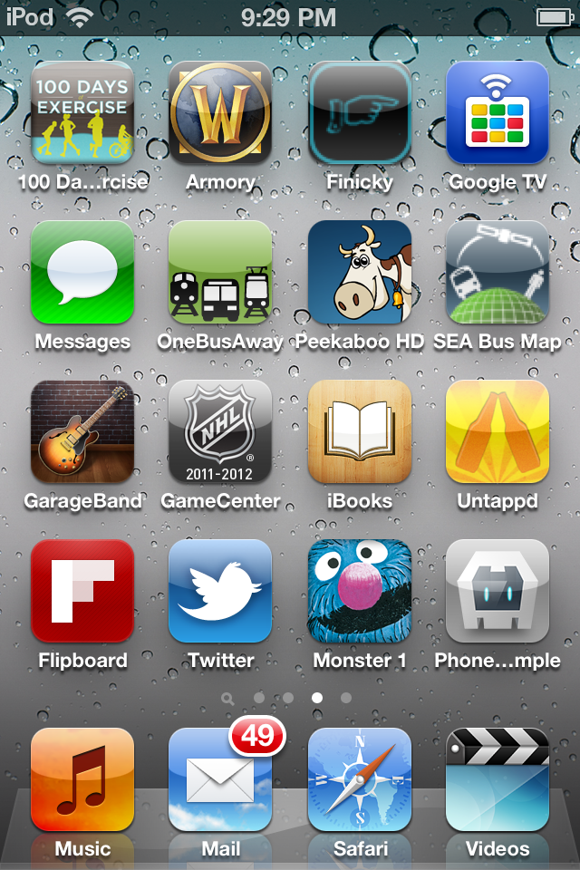

Building & Testing Mobile apps with Web Standards
Two different ways to approach mobile:
Mobile Web

Mobile App
Mobile Web
The easiest and fastest way to deploy web content to mobile devices is inside the browser.
Content Management
No need to deal with updates or installations.
Your users always have the latest version.
Development Productivity
Common codebase for every device.
Nearly every device supports HTML.
Problems
Different form factors to deal with.
Performance/features different across browsers.
In the end, you need to test directly on the device.
Adobe Edge Inspect
Synchronized Browsing
Browse the same site simultaneously across multiple devices to see how it renders.
Remote Inspection
View and modify elements remotely with Web Developers Tools.
Screenshots
Take screenshots from all the connected devices at once.
Mobile Applications

The most powerful way to deploy content on devices
Mobile applications give you access to all of the features of the device.
You can deploy on app stores and be a core part of the mobile ecosystem.
In some cases, the mobile browser is catching up with mobile apps in terms of device access.
if (navigator.geolocation) {
navigator.geolocation.getCurrentPosition(onSuccess, onError);
} else {
error('Geolocation not supported');
}
But in general, there is still a gap between mobile browsers and mobile apps when it comes to functionality.
One of the other pain points it that native SDKs tend to be more complex and are very device-specific.
You can't reuse code across platforms and have to develop each application from scratch.
Mobile App Landscape
- iOS (Objective-C)
- Android (Java NDK)
- Windows Phone (C#)
- BlackBerry (J2ME)
- WebOS (C++)
- Symbian (C++)
- Bada (C++)
Adobe PhoneGap
Mobile apps with HTML5, CSS3, and JavaScript
PhoneGap provides a web layer for UI with JavaScript Libraries to connect to device APIs.
Open Source

PhoneGap is an Adobe distribution of the Apache Cordova Project.
PhoneGap provides access to a number of core device APIs.
- Accelerometer
- Camera
- Capture
- Compass
- Connection
- Contacts
- Device
- Events
- File
- Geolocation
- Media
- Network
- Notification
- Storage
Plugins
PhoneGap includes a plugin architecture for bridging extra native functionality and bringing it into JavaScript.
Demo: Untappd
PhoneGap Build

PhoneGap Build lets you build for any platform supported by PhoneGap.

Provides built-in debugging and streamlined updating with Hydration.
Includes Github support for projects and a team system so you can specify different roles for your users.
Links
-
Edge Inspect - http://html.adobe.com/edge/inspect
PhoneGap - http://www.phonegap.com
PhoneGap Build - http://build.phonegap.com
Apache Cordova - http://cordova.io